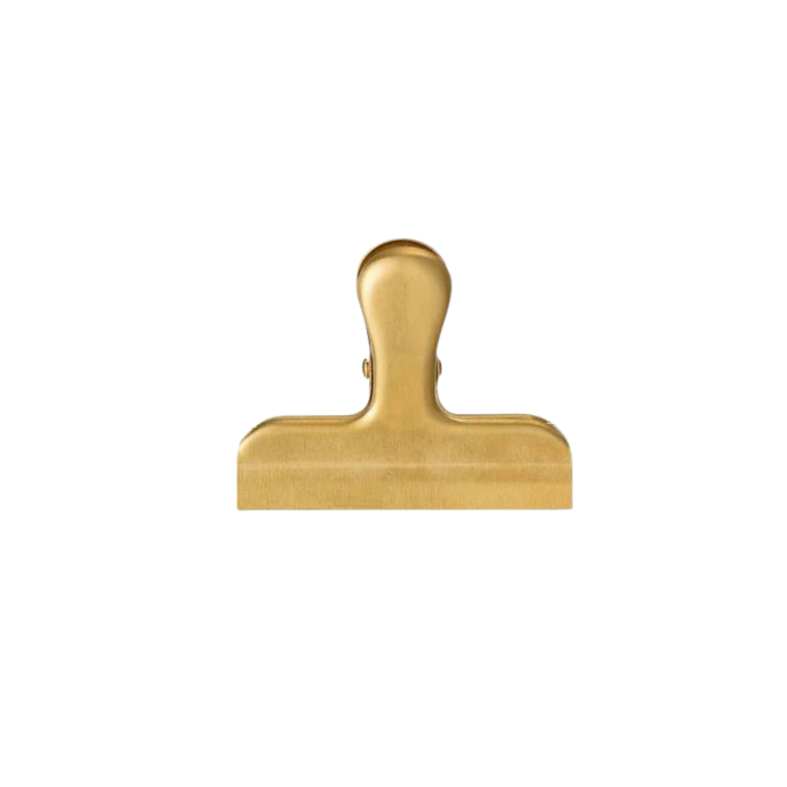
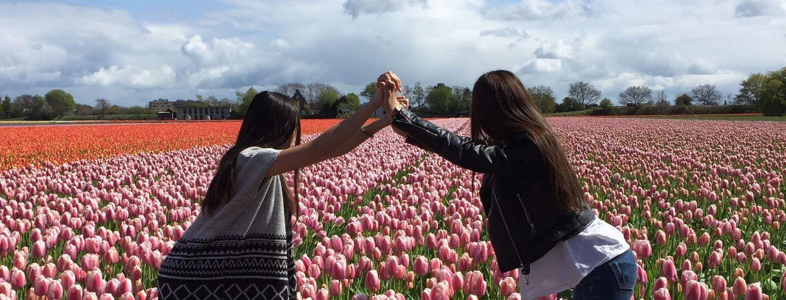
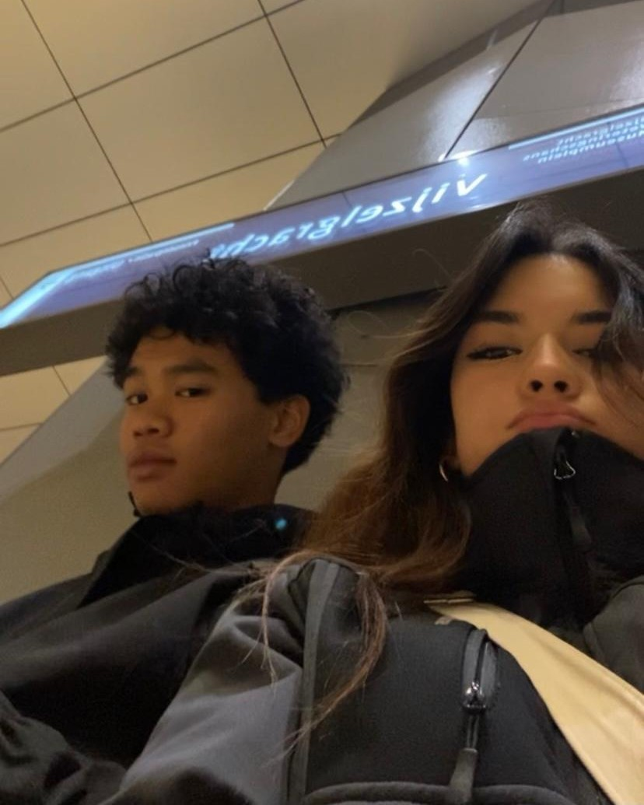
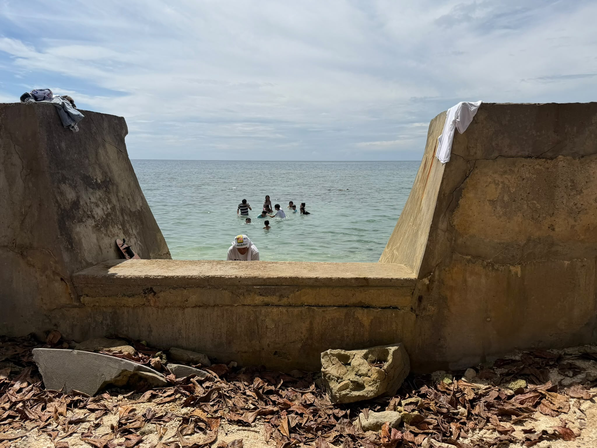
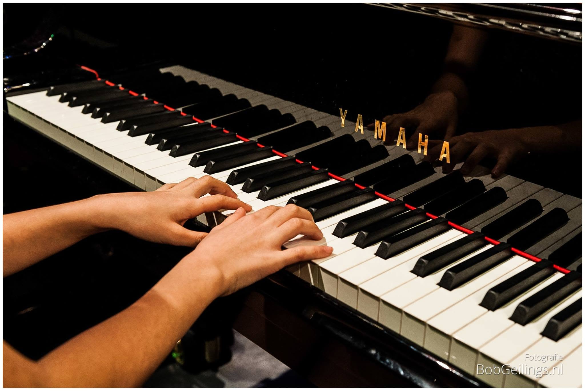
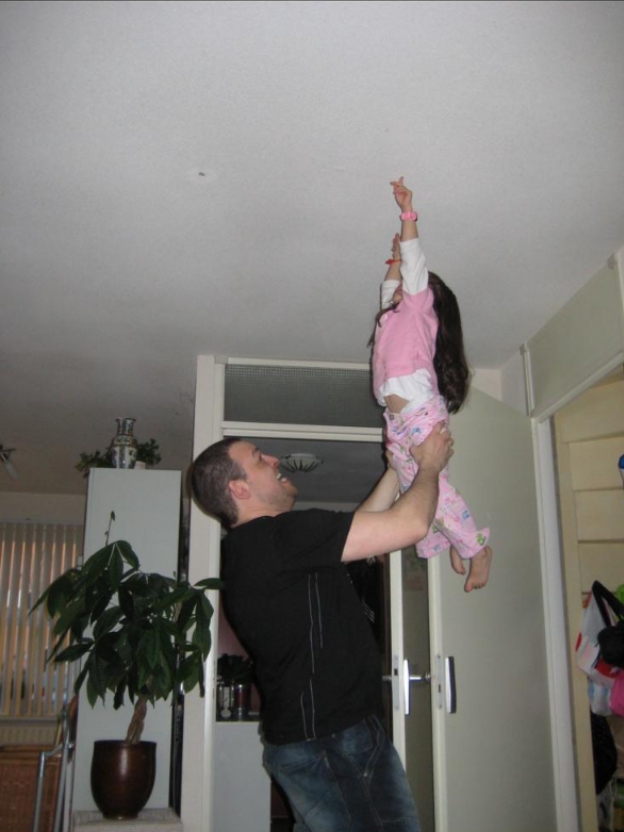
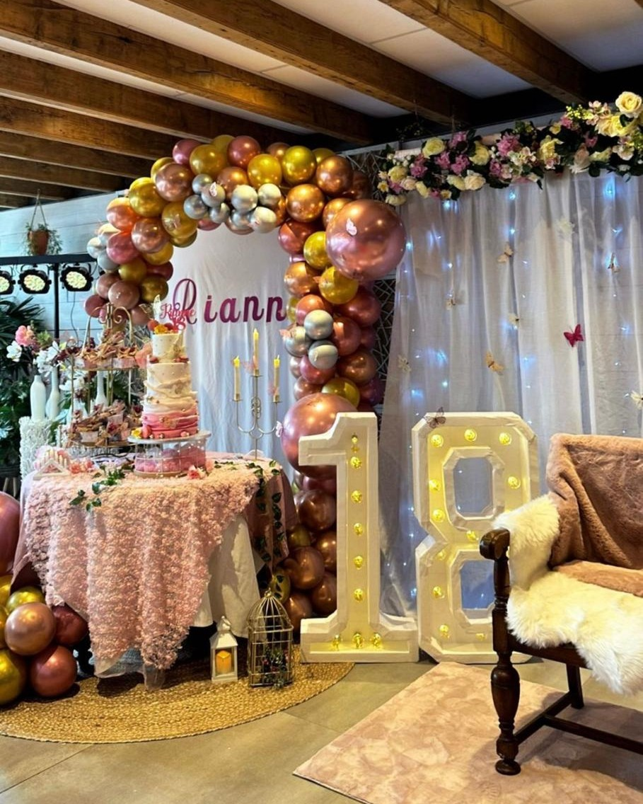
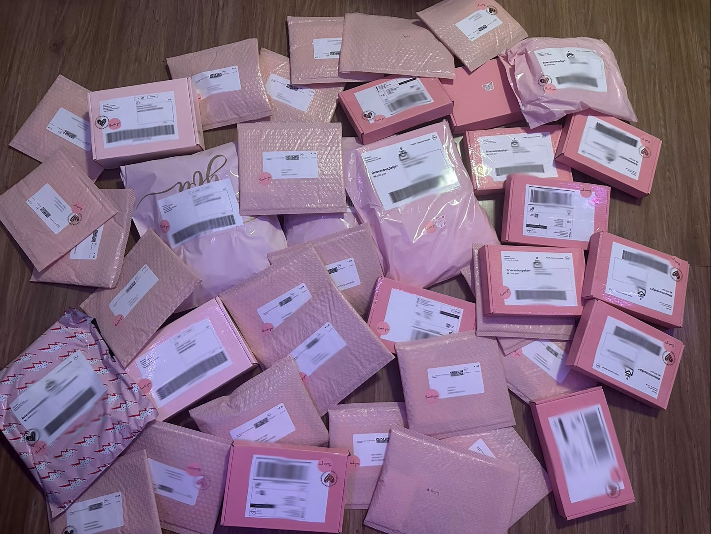
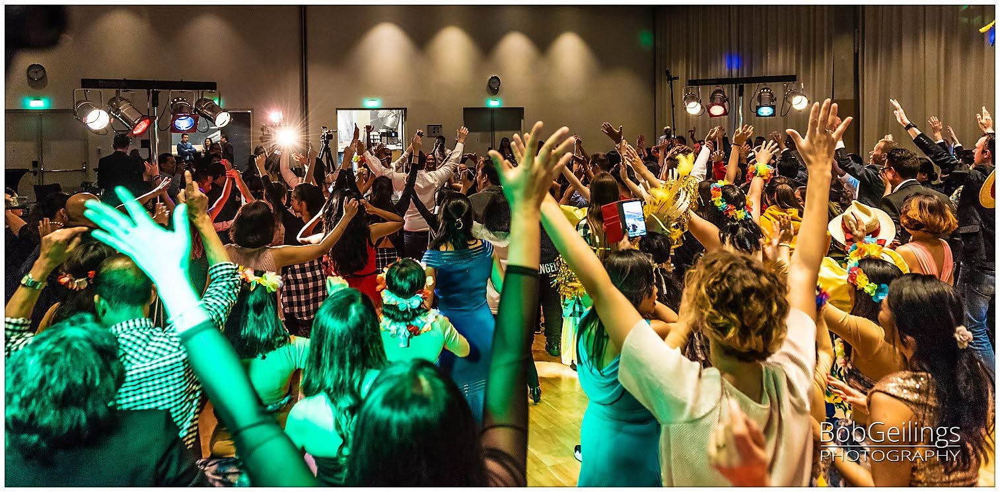

memories
These are little moments from my life, each connected to a song.
Whenever I hear that song again, it takes me right back to that memory
and the way it felt in that moment.
Memory 1
Memory 2
Memory 3
Memory 4
Memory 5
Memory 6
Memory 7
Memory 8


Summer 2014

Relationship Song

Reminder of Philippines

First Piano Song
Summer 2014
Relationship Song
Reminder of Philippines
First Piano Song

Childhood Song

18th Birthday

Beginning of Business

Childhood Filipino Parties
Childhood Song
18th Birthday
Beginning of Business
Childhood Filipino Parties
Summer 2014
Relationship Song
Reminder of Philippines
First Piano Song
Childhood Song
18th Birthday
Beginning of Business
Childhood Filipino Parties
×
Outside
Ellie Goulding
This memory brings me back to summer 2014, when me and my niece went
on vacation together for the very first time. This song always
played on the radio when we were driving somewhere and it just
always brings me back to that moment.
×
Best Part
Daniel Caesar
This song reminds me of the beginning of my relationship with my
boyfriend. He used to play it on his electric guitar all the time,
and I loved listening to him play. Somehow, without us even
realizing it, it became our song. Now, whenever I hear Best Part by
Daniel Caesar, it instantly takes me back to those early days of our
relationship and all the little moments we shared.
×
Raining In Manila
Lola Amour
This song reminds me of my trip to the Philippines after not being
there for such a long time. The last time I had visited, I was too
young to really remember or experience everything. But this time, I
was finally old enough to make memories that would stay with me.
Raining in Manila was playing on the radio everywhere we went, and I
heard it so many times during that trip. Now, whenever I hear this
song, it instantly takes me back to the Philippines and all the
memories I made there with my family.
×
River Flows In You
Yiruma
*River Flows in You* was the very first difficult song I managed to
learn completely on the piano. It took a lot of practice, but I was
so proud of myself when I could finally play the whole thing from
beginning to end. I remember feeling so accomplished because it was
the first time I had learned something that challenging. No matter
how many songs I learn to play, this one will always be special to
me because it was my first big achievement on the piano.
×
Yes Sir I Can Boogie
Baccara
When I was little, I absolutely hated brushing my teeth, so my dad
always had to do it for me. To distract me, he would sing Yes Sir, I
Can Boogie while brushing my teeth. He would sing it a few times so
I knew how much longer it would take, and I would try to sing along
instead of focusing on getting my teeth brushed. Somehow, he managed
to turn something I really didn't like into a fun little routine.
Now, whenever I hear this song, it reminds me of those funny little
moments with my dad.
×
Dancing In The Moonlight
Toploader
In the Philippines, turning 18 is a really big deal for girls. It's
celebrated with a big party, a beautiful venue, lots of decorations
and a whole program filled with special moments. For my 18th
birthday, I got to experience this tradition myself. One of my
favorite memories from that night was dancing a practised dance to
Dancing in the Moonlight with my family and friends. It was such a
special moment, being surrounded by all the people I love and
celebrating together. Now, whenever I hear this song, it takes me
straight back to my 18th birthday and that unforgettable night.
×
Pluto Projector
Rex Orange County
We used to play this song all the time while making plans, sharing
ideas and figuring out how to turn our dreams into reality.
Everything was so new and exciting, and we were both so full of
ideas for what we wanted to create. Whenever I hear this song now,
it takes me right back to those early days, all the planning, the
excitement and the feeling of starting something that was truly our
own.
×
On the Floor
Jennifer Lopez
On the Floor by Jennifer Lopez reminds me of all the Filipino
parties I used to go to when I was younger. This song would play all
the time, and I remember being surrounded by so many family members
and friends, everyone dancing, singing and having the best time
together. I miss those parties and that time in my life so much.
Whenever I hear this song now, I instantly get this overwhelming
feeling of nostalgia. It brings me right back to those happy
memories and makes me wish I could relive those moments all over
again.